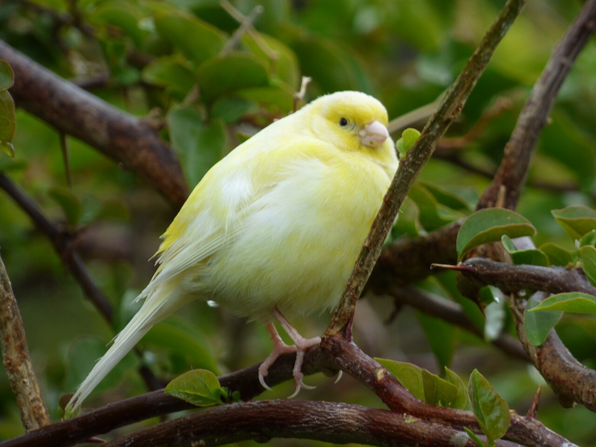

The domestic canary, often simply known as the canary (Serinus canaria forma domestica),
is a domesticated form of the wild canary, a small songbird in the finch family originating from the
Macaronesian Islands of the Azores, Madeira and the Canary Islands.

Feral yellow canary at Midway Atoll
Domestic canaries are generally divided into three main groups:
Colour-bred canaries (bred for their many colour mutations – Ino, Eumo, Satinette, Bronze, Ivory, Onyx, Mosaic, Brown, red factor, Green (Wild Type): darkest black and brown melanin shade in yellow ground birds, Yellow Melanin: mutation showing yellow ground colour with brown and black pigment, Yellow Lipochrome: mutation creating the loss of brown and black pigment, leaving yellow ground colour etc.)
Type canaries (bred for their shape and conformation – Australian plainhead, Berner, Border, Fife, Gibber Italicus, Gloster, Lancashire, Raza Española, Yorkshire, etc.)
Song canaries (bred for their unique and specific song patterns – Spanish Timbrado, German Roller (also known as Harz Roller), Waterslager (also known as "Malinois"), American Singer, Russian Singer, Persian Singer).